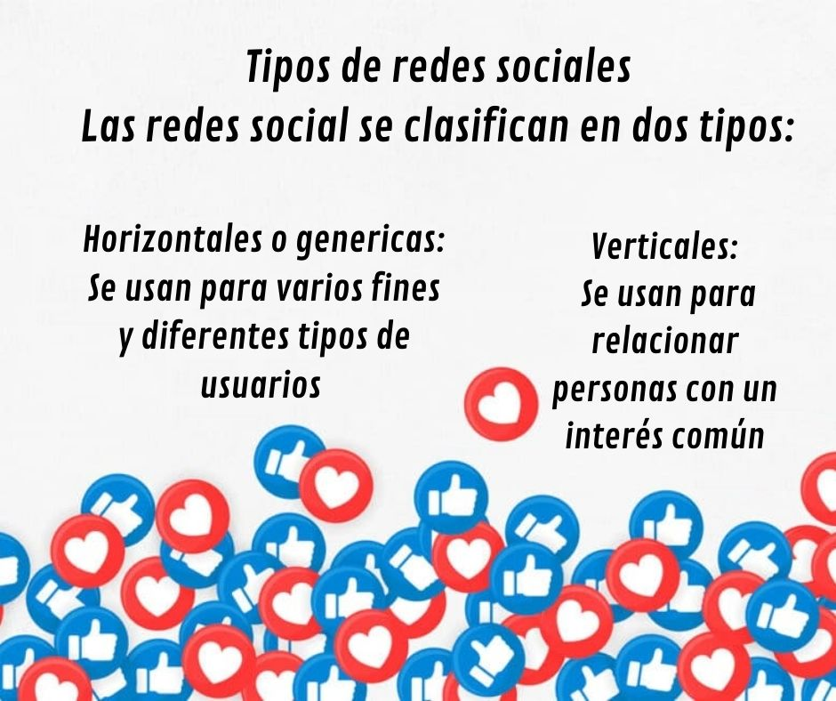

¿QUE SON LAS REDES SOCIALES?

Lo que se conoce hoy en día como
redes sociales son plataformas
digitales que son conformadas por
comunidades de individuos con ciertos
intereses en común como la amistad o
el trabajo, permitiendo el contacto
entre individuos que no
necesariamente deben conocerse y
que logran que allá un intercambio de
información. (Editorial Ectecé, 2021)
TIPOS DE REDES SOCIALES
